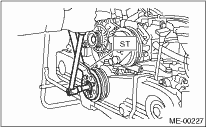
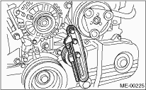

1. Install the crank pulley.
2. Install the pulley bolt.
To lock the crankshaft, use ST.
| ST 499977100 | CRANK PULLEY WRENCH |
(1) Clean the crankshaft thread using compressed air.
(2) Apply engine oil to the crank pulley bolt seat and thread.
(3) Tighten the bolts temporarily with tightening torque of 44 N·m (4.5 kgf-m, 33 ft-lb).
(4) Tighten the crank pulley bolts.
Tightening torque:
180 N·m (18.4 kgf-m, 132.8 ft-lb)

3. Check that the tightening angle of the clamp pulley bolt is 65° or more. Perform the following procedures when less than 65°.
CAUTION:
If the tightening angle of crank pulley bolt is less than 65°, the bolt is damaged. In this case, the bolt must be replaced.
(1) Replace the crank pulley bolts and clean them.
Crank pulley bolt:
Part No. 12369AA011
(2) Clean the crankshaft thread using compressed air.
(3) Apply engine oil to the crank pulley bolt seat and thread.
(4) Tighten the bolts temporarily with tightening torque of 44 N·m (4.5 kgf-m, 33 ft-lb).
(5) Tighten the crank pulley bolt while maintaining them at an angle between 65° and 75°.
NOTE:
Conduct the tightening procedures by confirming the turning angle of crank pulley bolt referring to the gauge indicated on timing belt cover.
4. Install the belt tensioner.

5. Install the V-belts.